Use the existing creation style when it can be deduced
This preference determines whether GWT Designer attempts to use the
existing code creation style already in a file to generate code.
GWT Designer checks a file when it is opened in the editor to see if one
style or the other is used. This preference determines in which method components will be created by default
(in the event that a suitable method has not already be
defined for the current class). If the method does not exist, it will be
created and a call to it added to the constructor for the class. Various
default choices are provided to match the code generation patterns of
other GUI builders. GWT Designer supports a wide variety of code generation styles
and can emulate most other Java GUI builders including NetBeans,
JBuilder, the Eclipse Visual Editor, etc. Choose a
Variable
Generation style (Local,
Field, Initialized Field or
Lazy) and a Statement Generation style (Flat or
Block). Many of the styles have additional options that can be set.
Once any combination of settings is selected, you can see a preview of
that code generation style in the Preview pane. GWT Designer supports several Variable Generation
styles including Local, Field,
Initialized Field or
Lazy.
 Method name for new statements
Method name for new statementsDefault code generation settings
Variable
generation
Local Variable Mode
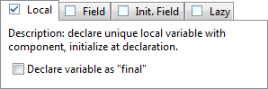
In the Local variable generation style, each component is assigned to a unique local variable and initialized at the point of declaration. An option is provided to declare each variable as final. Note that component types marked as As Field on the Variables > Type Specific preference page will always be assigned to fields.
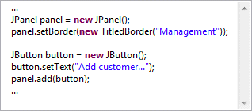
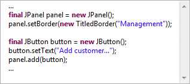
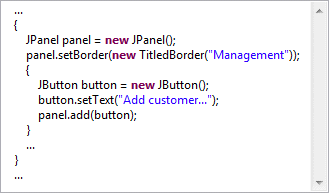
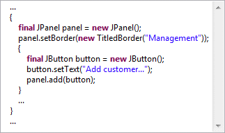
Field Mode
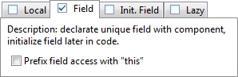
In the Field generation style, each component is assigned to a unique field and initialized at the point where it is first used. An option is provided to prefix each field reference with this.
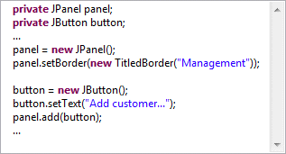
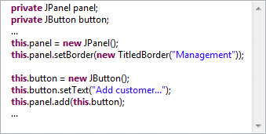
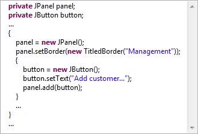
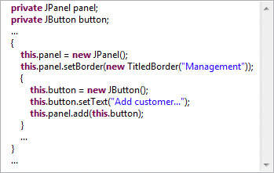
Initialized Field Mode
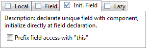
In the Initialized Field generation style, each component is assigned to a unique field and initialized at the point at the point of declaration. An option is provided to prefix each field reference with this.

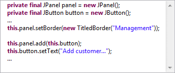
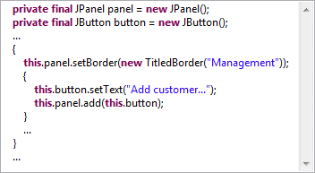
Lazy Mode
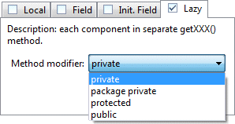
In the Lazy generation style, each component is created in its own unique getXXX() method. An option is provided to set the visibility modifier to private, package private, protected or public.
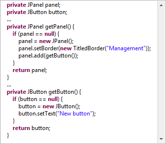
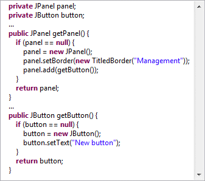
Statement generation
GWT Designer supports flat mode and block mode generation modes.
Flat Mode
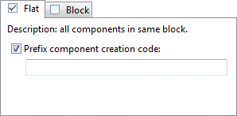
In flat mode, each component is created in the same scope at the same indentation level. An option is provided to prefix the creation of each component with either a blank line or a comment.
Block Mode
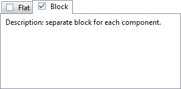
In block mode, each component is created in its own scoped code block. Child components are created in nested blocks.